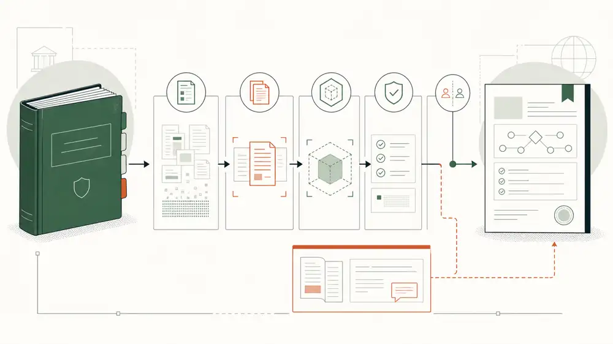

Executive brief
The Compliance Decision System
The guide contains the policy. The case contains the evidence. The system turns both into a decision the operation can inspect and trust.

ReadA four-essay technical series
How a versioned handbook, governed AI, deterministic safeguards, and evidence-gated authority produce decisions that are easier to improve—and easier to defend.
Evidence spine
Featured comparison
A governed AI system built in roughly a week produced about four times fewer recall-side misses than SNH AI—and made the decision path easier to audit.
Read the comparisonThis is a positive-only recall slice, not an overall accuracy score.
Executive brief
The guide contains the policy. The case contains the evidence. The system turns both into a decision the operation can inspect and trust.

ReadEngineering
The model interprets the case. The harness decides whether the interpretation may survive.
 Read
Read
Philosophy
Rules own what must be exact. Models handle bounded ambiguity. Every increase in authority is purchased with evidence.